Spatial Genomics Mouse Kidney
Source:vignettes/spatial_genomics_mouse_kidney.Rmd
spatial_genomics_mouse_kidney.Rmd1 Dataset explanation
This tutorial covers Giotto object creation and simple exploratory analysis with the gene expression data generated on Spatial Genomics’ GenePS instrument of kidney tissue resected from a 2-month-old female mouse. The data was generated using sequential fluorescence in situ hybridization (seqFISH) to visualize 220 genes directly in the sample.
2 Start Giotto
# Ensure Giotto Suite is installed
if (!"Giotto" %in% installed.packages()) {
pak::pkg_install("giotto-suite/Giotto")
}
# Ensure Giotto Data is installed
if (!"GiottoData" %in% installed.packages()) {
pak::pkg_install("giotto-suite/GiottoData")
}
# Ensure the Python environment for Giotto has been installed
genv_exists <- Giotto::checkGiottoEnvironment()
if (!genv_exists) {
# The following command need only be run once to install the Giotto environment
Giotto::installGiottoEnvironment()
}3 Project Data Paths
library(Giotto)
library(GiottoData)
# Set path to folder containing spatial genomics data
data_path <- "/path/to/data/Spatial_Genomics/data/"
dapi <- paste0(data_path, "SG_MouseKidneyDataRelease_DAPI_section1.ome.tiff")
mask <- paste0(data_path, "SG_MouseKidneyDataRelease_CellMask_section1.tiff")
tx <- paste0(data_path, "SG_MouseKidneyDataRelease_TranscriptCoordinates_section1.csv")4 Create a Giotto object
# Create and plot giotto polygons
gpoly <- createGiottoPolygonsFromMask(mask,
shift_vertical_step = FALSE,
shift_horizontal_step = FALSE,
flip_horizontal = FALSE,
flip_vertical = FALSE
)
plot(gpoly)
# Create and plot giotto points
tx <- data.table::fread(tx)
gpoints <- createGiottoPoints(tx)
plot(gpoints, raster_size = 1e3)
# Create giottoLargeImage and giottoObject
gimg <- createGiottoLargeImage(dapi, use_rast_ext = TRUE)
sg <- createGiottoObjectSubcellular(
gpoints = list("rna" = gpoints),
gpolygons = list("cell" = gpoly)
)
sg <- addGiottoLargeImage(sg, largeImages = list(image = gimg))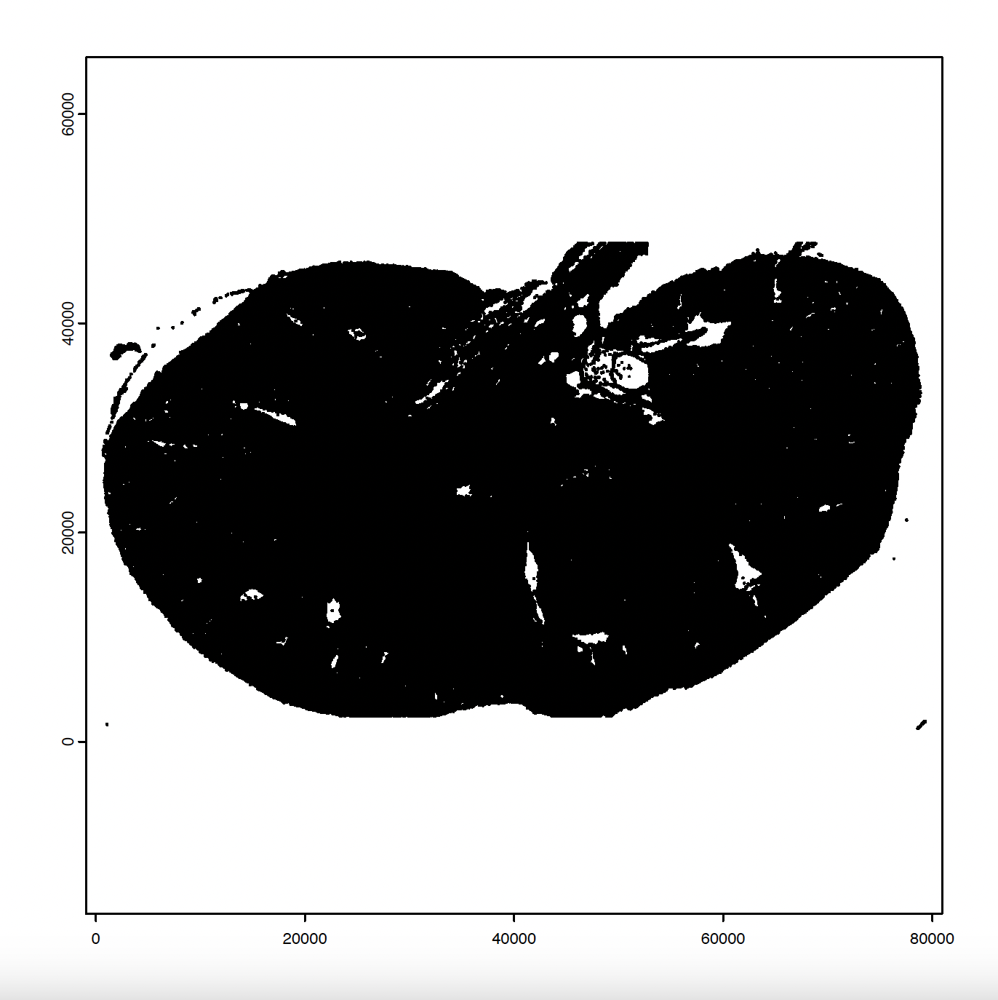
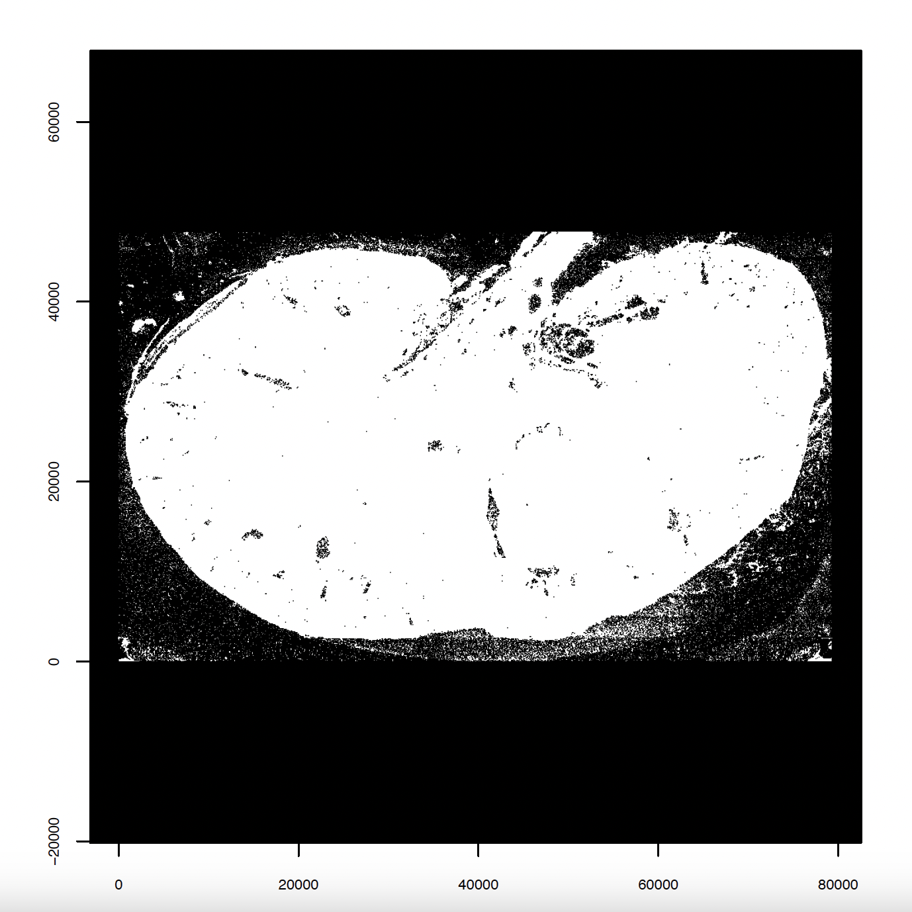
5 Aggregate, Normalize, and Filter Giotto Data
# Aggregate
sg <- calculateOverlapRaster(sg,
spatial_info = "cell",
feat_info = "rna"
)
sg <- overlapToMatrix(sg)
sg <- addSpatialCentroidLocations(sg)
# Filter and Normalize
filterDistributions(sg, detection = "feats")
filterDistributions(sg, detection = "cells")
sg <- filterGiotto(sg, feat_det_in_min_cells = 100,
min_det_feats_per_cell = 20,
expression_threshold = 1)
sg <- normalizeGiotto(sg)
# Statistics
sg <- addStatistics(sg)6 Dimension Reduction
6.1 Highly Variable Features
# Calculate highly variable features
sg <- calculateHVF(gobject = sg)
cat(fDataDT(sg)[, sum(hvf == "yes")], "hvf found")
# Only 18 hvf found -> better to use ALL genes -> feats_to_use = NULL
sg <- runPCA(
gobject = sg,
spat_unit = "cell",
expression_values = "scaled",
feats_to_use = NULL,
scale_unit = FALSE,
center = FALSE
)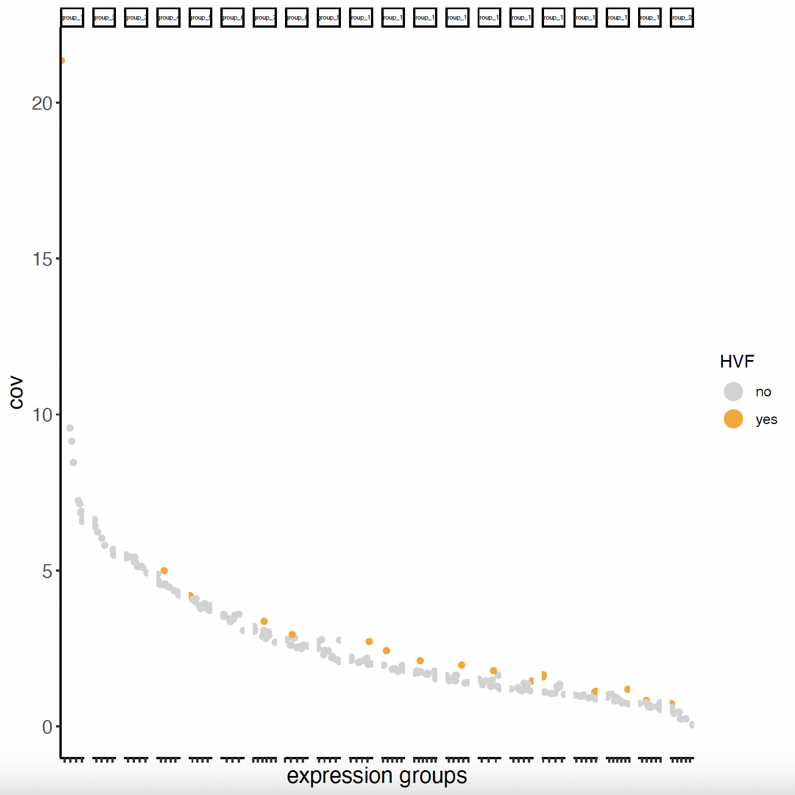
6.2 PCA
# Visualize Screeplot and PCA
screePlot(sg,
ncp = 20,
save_param = list(
save_name = "sg_screePlot"
)
)
plotPCA(sg,
spat_unit = "cell",
dim_reduction_name = "pca",
dim1_to_use = 1,
dim2_to_use = 2
)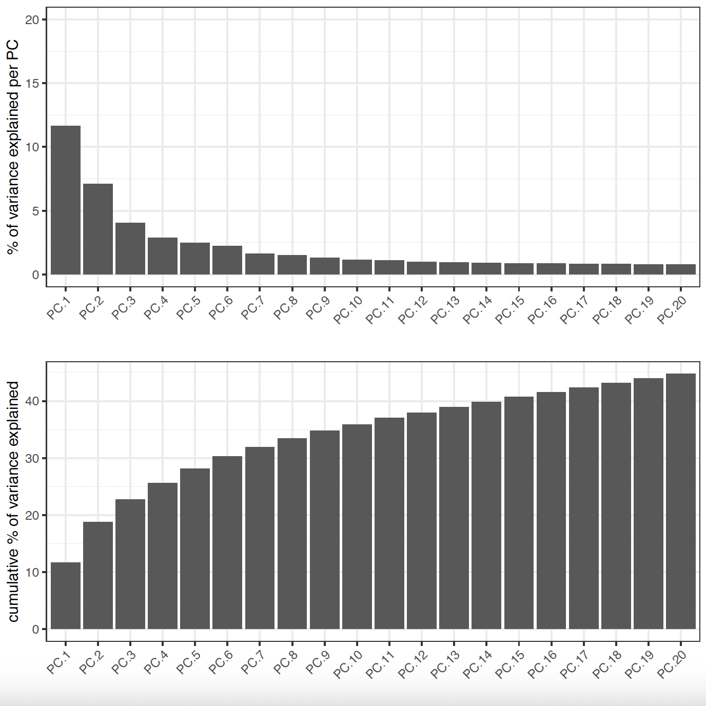
6.3 tSNE and UMAP
# Run and Plot tSNE and UMAP
sg <- runtSNE(sg,
dimensions_to_use = 1:10,
spat_unit = "cell",
check_duplicates = FALSE
)
sg <- runUMAP(sg,
dimensions_to_use = 1:10,
spat_unit = "cell"
)
plotTSNE(sg,
point_size = 0.01,
save_param = list(
save_name = "sg_tSNE"
)
)
plotUMAP(sg,
point_size = 0.01,
save_param = list(
save_name = "sg_UMAP"
)
)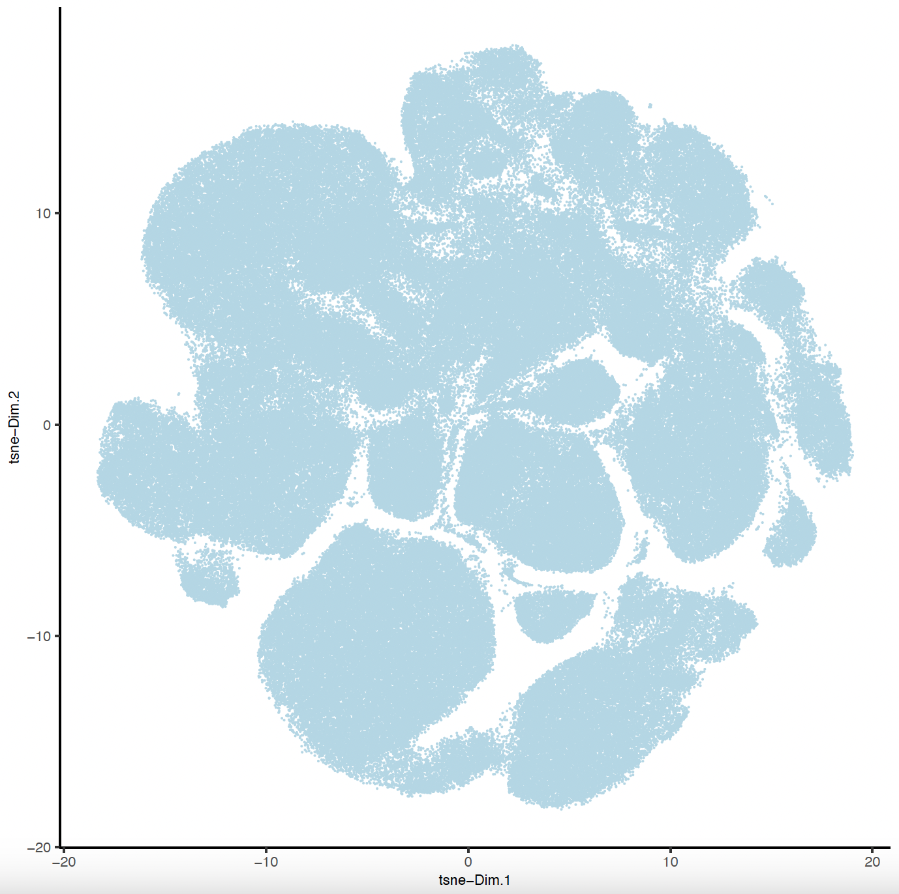
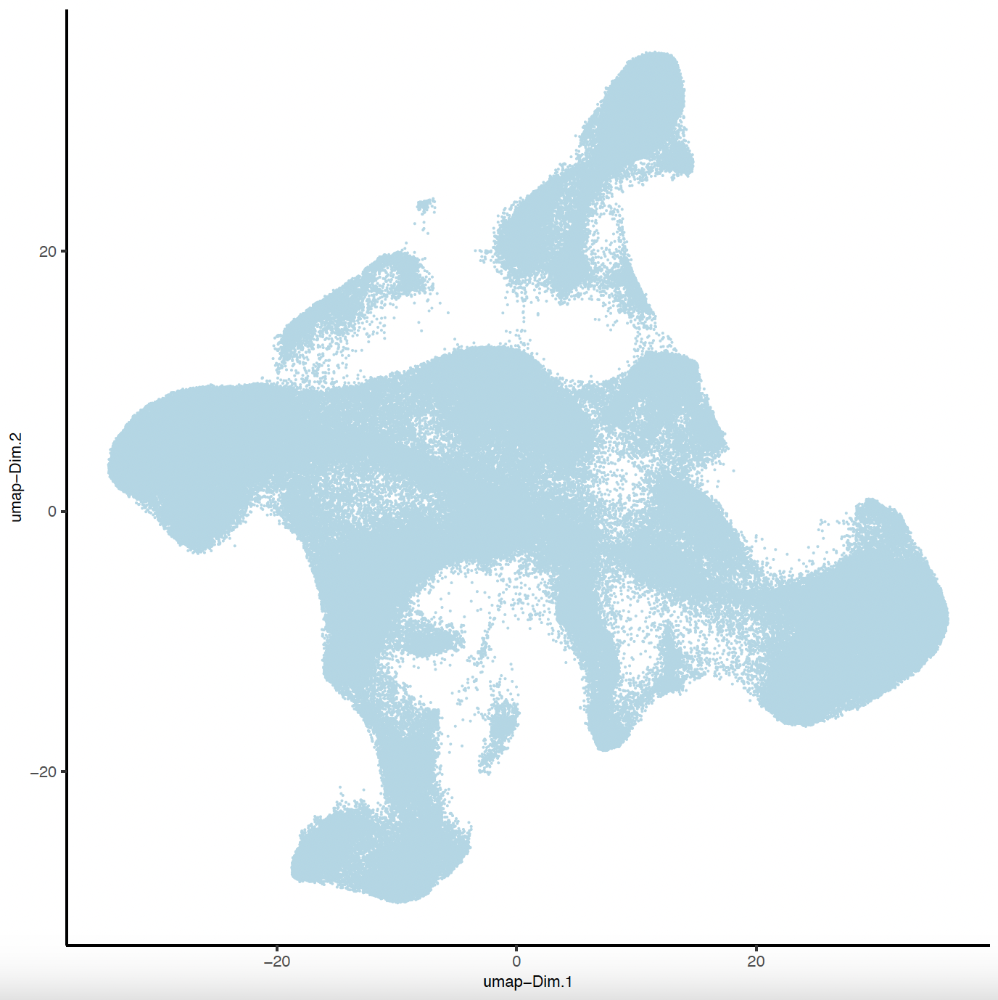
7 Clustering
7.1 UMAP Leiden Clustering
# Clustering and UMAP cluster visualization
sg <- createNearestNetwork(sg,
dimensions_to_use = 1:10,
k = 10,
spat_unit = "cell"
)
sg <- doLeidenCluster(sg,
resolution = 0.25,
n_iterations = 100,
spat_unit = "cell"
)
# Plot Leiden clusters onto UMAP
plotUMAP(
gobject = sg,
spat_unit = "cell",
cell_color = "leiden_clus",
show_legend = FALSE,
point_size = 0.01,
point_shape = "no_border",
save_param = list(save_name = "sg_umap_leiden")
)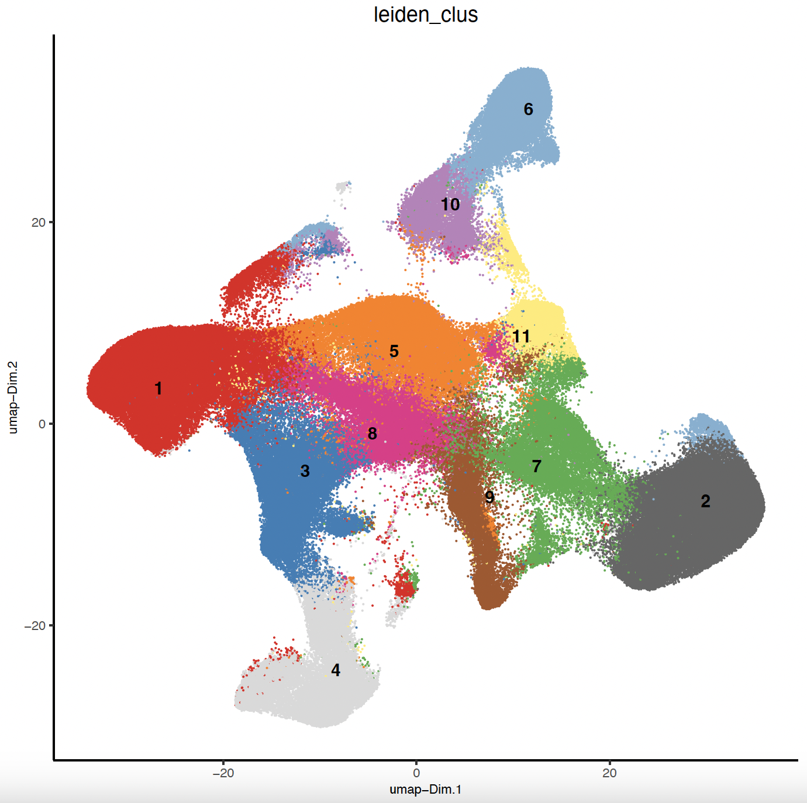
7.2 Spatial Leiden Clustering
# Plot Leiden clusters onto spatial image plot
my_spatPlot <- spatPlot2D(
gobject = sg,
spat_unit = "cell",
cell_color = "leiden_clus",
point_size = 0.4,
point_shape = "no_border",
show_legend = TRUE,
image_name = gimg,
save_param = list(
save_name = "sg_spat_leiden",
base_width = 15,
base_height = 15
)
)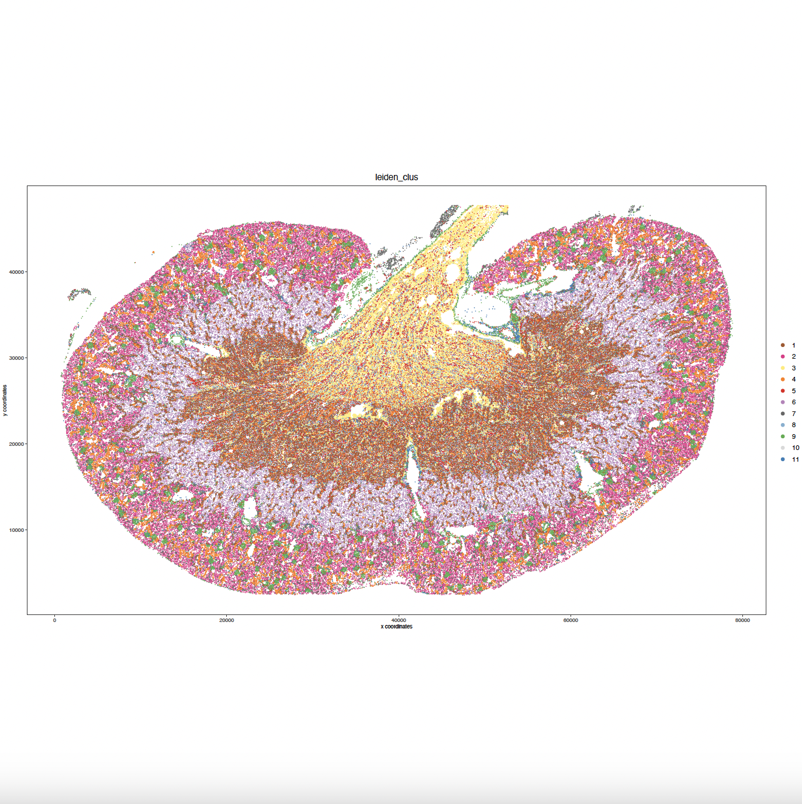
8 Cell Type Marker Gene Detection
# Identify gene markers_gini per cluster
markers_gini <- findmarkers_gini_one_vs_all(
gobject = sg,
method = "gini",
expression_values = "normalized",
cluster_column = "leiden_clus",
min_feats = 1, rank_score = 2
)
# Display details about the marker genes
markers_gini[, head(.SD, 2), by = "cluster"]
# Violinplots to show marker expression
topgenes_gini <- unique(markers_gini[, head(.SD, 2), by = "cluster"])
violinPlot(sg,
feats = topgenes_gini$feats[1:10],
cluster_column = "leiden_clus")
violinPlot(sg,
feats = topgenes_gini$feats[11:20],
cluster_column = "leiden_clus")
# Known markers_gini to Annotate Giotto
selected_genes <- c(
"My12", "G6pc", "Ppp1r1a", "Grik5", "Hsd11b2", "Rhbg", "Mapk11",
"Egf17", "Gpr55", "Acsm2", "Tpm2", "D1c1", "Shisa3",
"Tspan2", "Sox17", "Eef2", "Cd79b", "Ctss", "Serpina1f", "Cyp51"
)
cell_metadata <- pDataDT(sg)
cluster_order <- unique(cell_metadata$leiden_clus)
# Plot markers_gini to clusters heatmap
plotMetaDataHeatmap(sg,
expression_values = "scaled",
metadata_cols = c("leiden_clus"),
selected_feats = selected_genes,
custom_feat_order = rev(selected_genes),
custom_cluster_order = cluster_order
)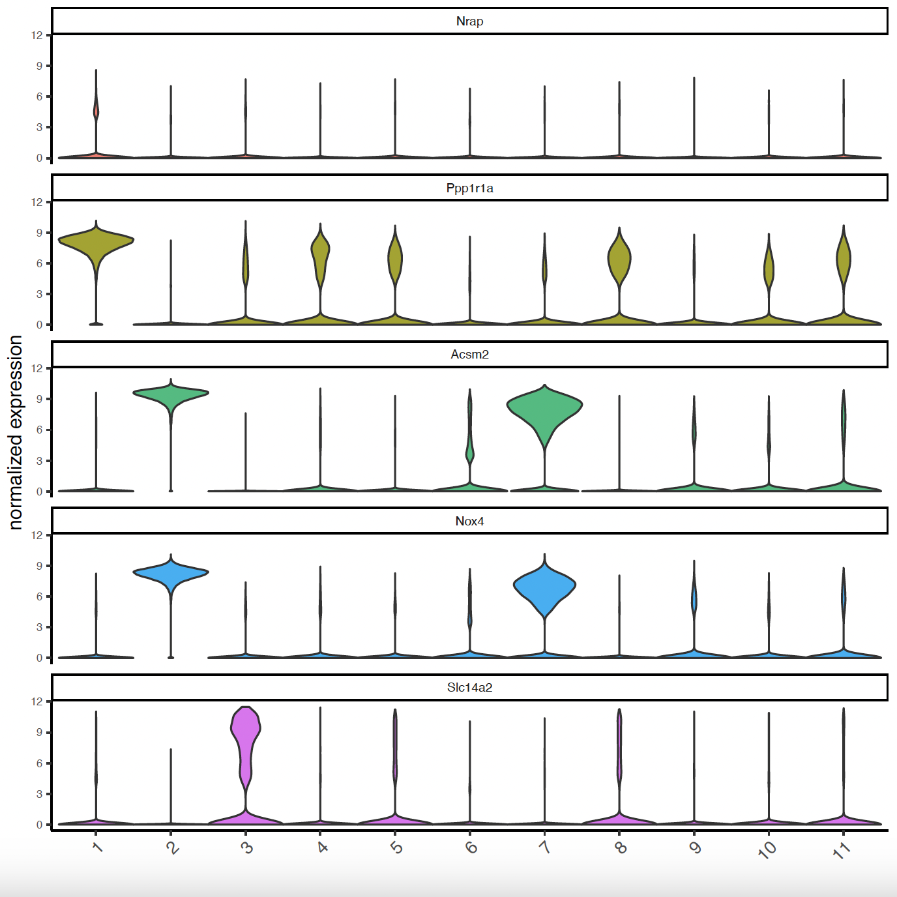
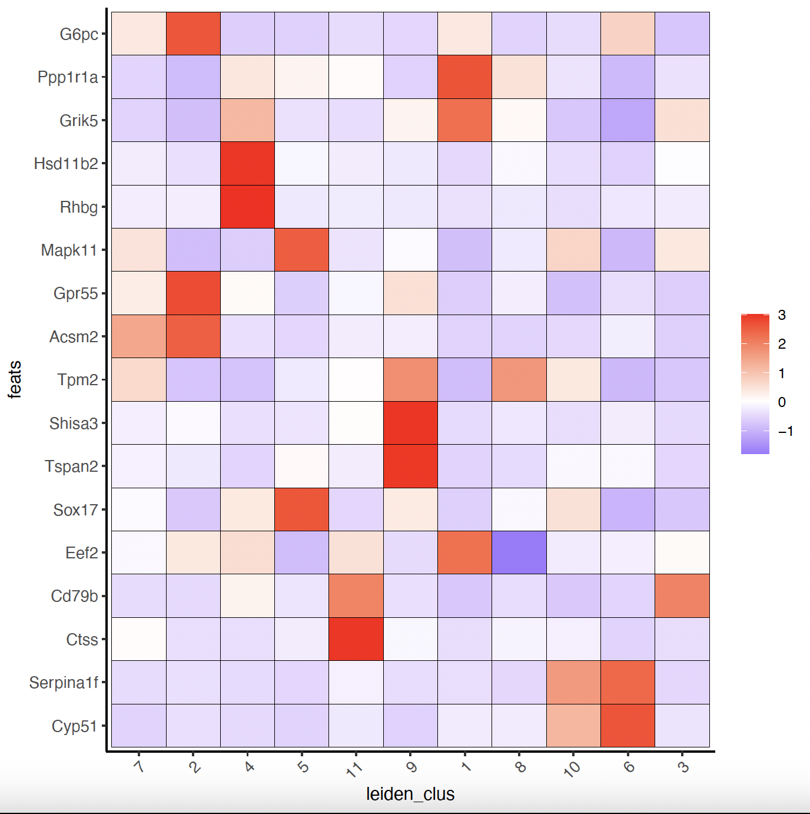
9 Spatial Gene Expression Patterns
9.1 Establish Delaunay Network
plotStatDelaunayNetwork(gobject = sg,
maximum_distance = 250)
sg <- createSpatialNetwork(
gobject = sg,
minimum_k = 2,
maximum_distance_delaunay = 250
)
sg <- createSpatialNetwork(
gobject = sg,
minimum_k = 2,
method = "kNN",
k = 10
)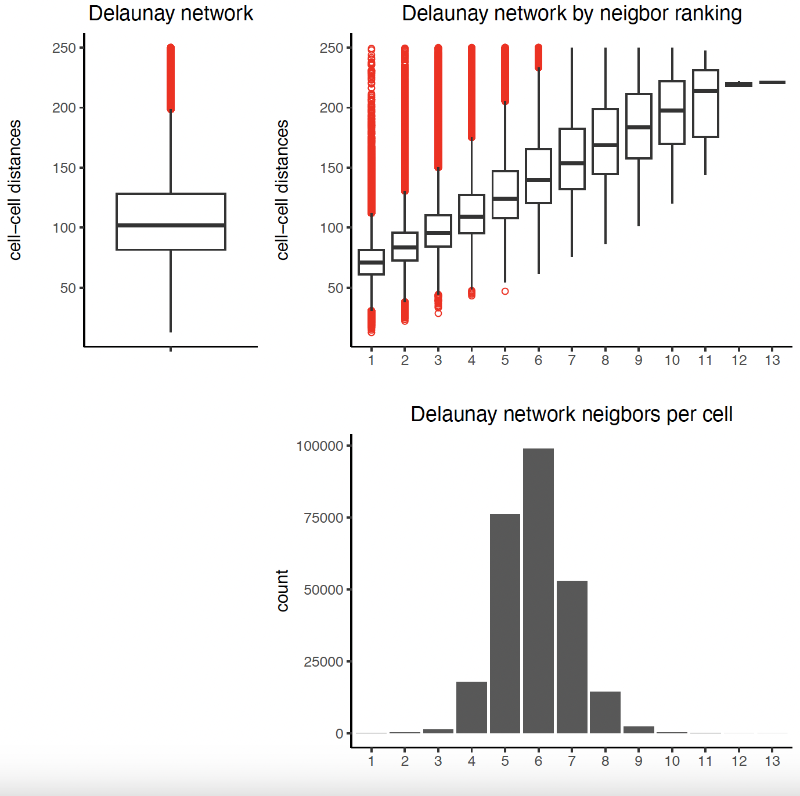
9.2 Binspect by K-Means
km_spatialfeats <- binSpect(sg)
spatFeatPlot2D(sg,
expression_values = "scaled",
feats = km_spatialfeats[1:4]$feats,
point_shape = "no_border",
show_network = FALSE,
network_color = "lightgrey",
point_size = 0.5,
cow_n_col = 2
)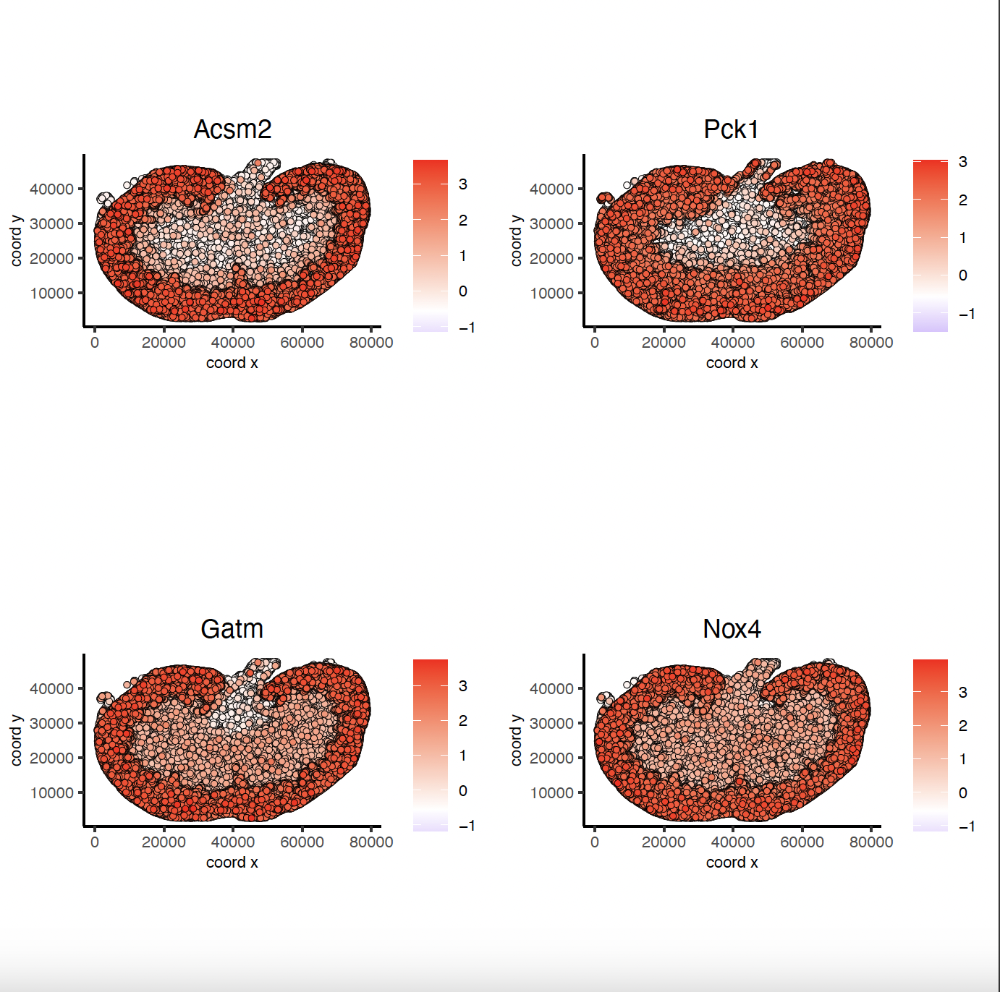
9.3 Binspect by Rank
rank_spatialfeats <- binSpect(sg,
bin_method = "rank")
spatFeatPlot2D(sg,
expression_values = "scaled",
feats = rank_spatialfeats[1:4]$feats,
point_shape = "no_border",
show_network = FALSE,
network_color = "lightgrey",
point_size = 0.5,
cow_n_col = 2
)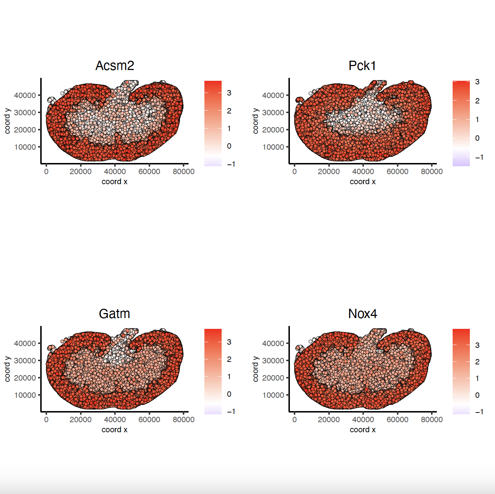
10 Spatial Co-Expression Patterns
# Spatial Co-Expression
spatial_genes <- km_spatialfeats[1:500]$feats
# 1. create spatial correlation object
spat_cor_netw_DT <- detectSpatialCorFeats(sg,
method = "network",
spatial_network_name = "Delaunay_network",
subset_feats = spatial_genes
)
# 2. identify most similar spatially correlated genes for one gene
Acsm2_top10_genes <- showSpatialCorFeats(spat_cor_netw_DT,
feats = "Acsm2",
show_top_feats = 10)
spatFeatPlot2D(sg,
expression_values = "scaled",
feats = Acsm2_top10_genes$variable[1:4],
point_size = 0.5,
point_shape = "no_border"
)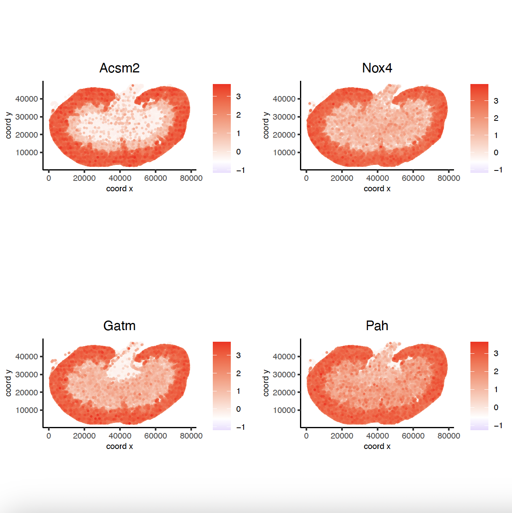
# 3. cluster correlated genes & visualize
spat_cor_netw_DT <- clusterSpatialCorFeats(spat_cor_netw_DT,
name = "spat_netw_clus",
k = 10)
heatmSpatialCorFeats(sg,
spatCorObject = spat_cor_netw_DT,
use_clus_name = "spat_netw_clus",
heatmap_legend_param = list(title = "Spatial Correlation")
)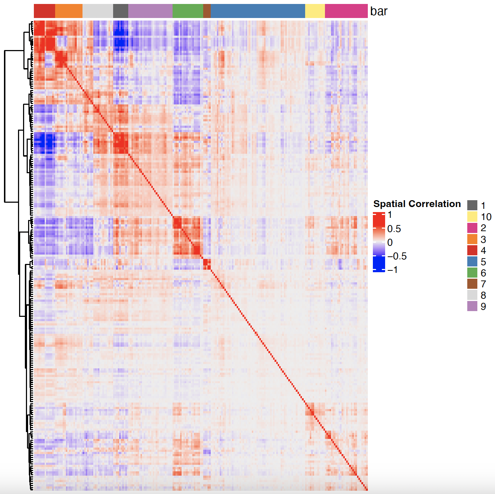
# 4. rank spatial correlated clusters and show genes for selected clusters
netw_ranks <- rankSpatialCorGroups(sg,
spatCorObject = spat_cor_netw_DT,
use_clus_name = "spat_netw_clus"
)
top_netw_spat_cluster <- showSpatialCorFeats(spat_cor_netw_DT,
use_clus_name = "spat_netw_clus",
show_top_feats = 1
)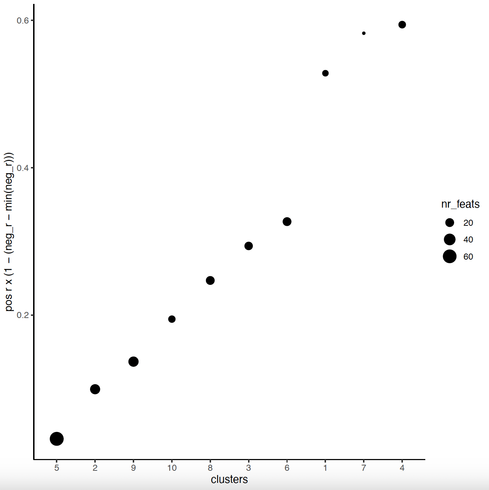
# 5. create metagene enrichment score for clusters
cluster_genes <- top_netw_spat_cluster$clus
names(cluster_genes) <- top_netw_spat_cluster$feat_ID
sg <- createMetafeats(sg,
feat_clusters = cluster_genes,
name = "cluster_metagene")
spatCellPlot(sg,
spat_enr_names = "cluster_metagene",
cell_annotation_values = netw_ranks[1:4]$clusters,
point_size = 0.05,
point_shape = "no_border"
)
spatCellPlot(sg,
spat_enr_names = "cluster_metagene",
cell_annotation_values = netw_ranks[5:8]$clusters,
point_size = 0.05,
point_shape = "no_border"
)
spatCellPlot(sg,
spat_enr_names = "cluster_metagene",
cell_annotation_values = netw_ranks[9:10]$clusters,
point_size = 0.05,
point_shape = "no_border"
)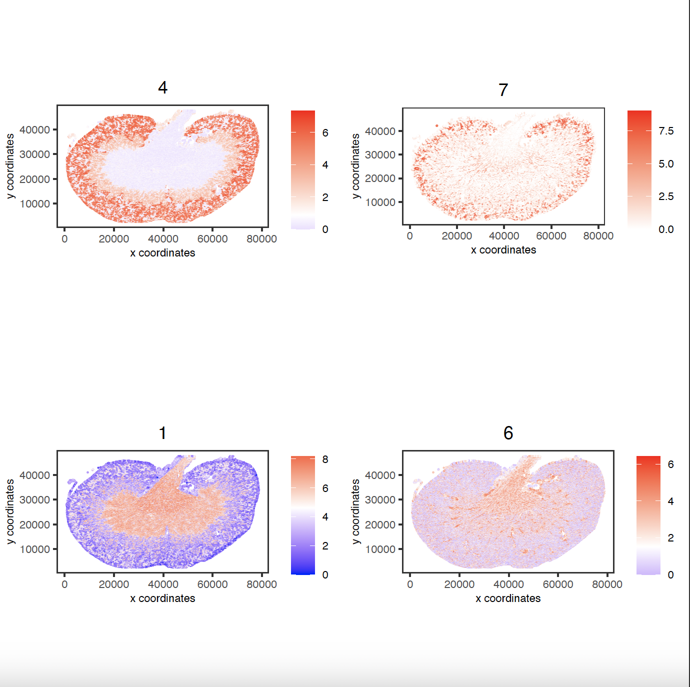